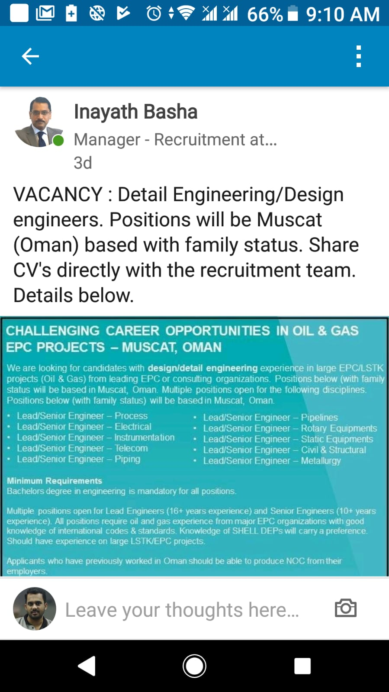
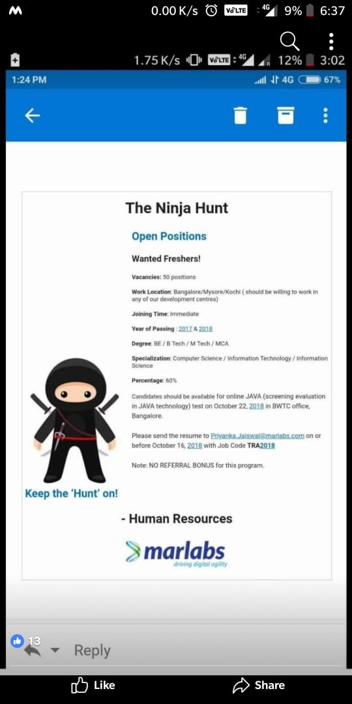
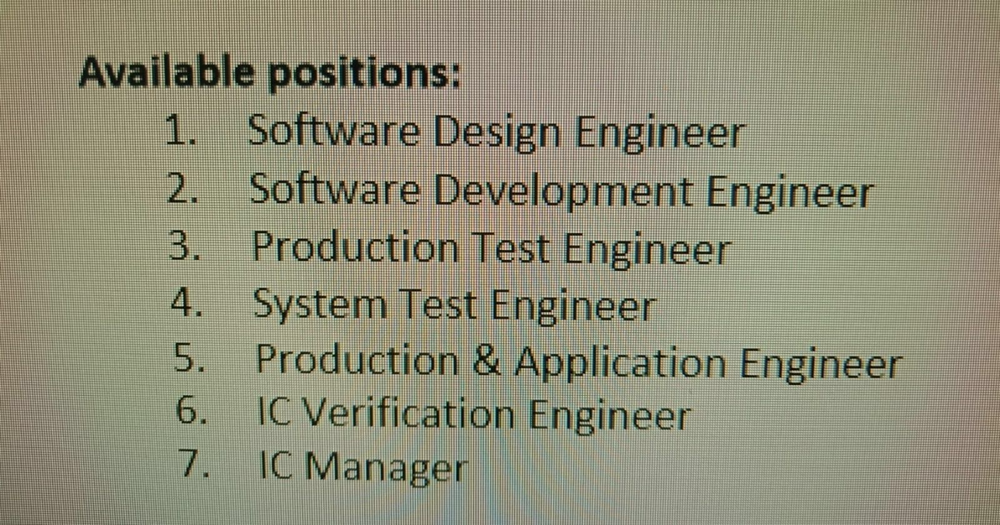
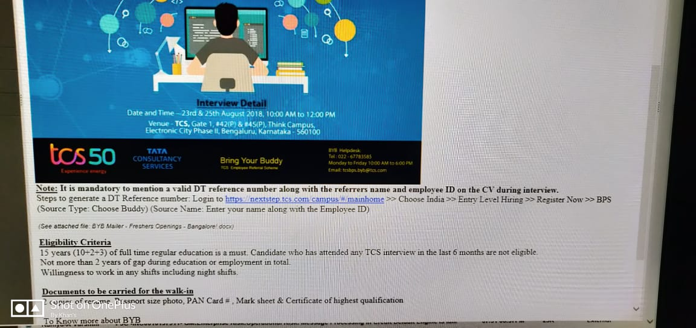
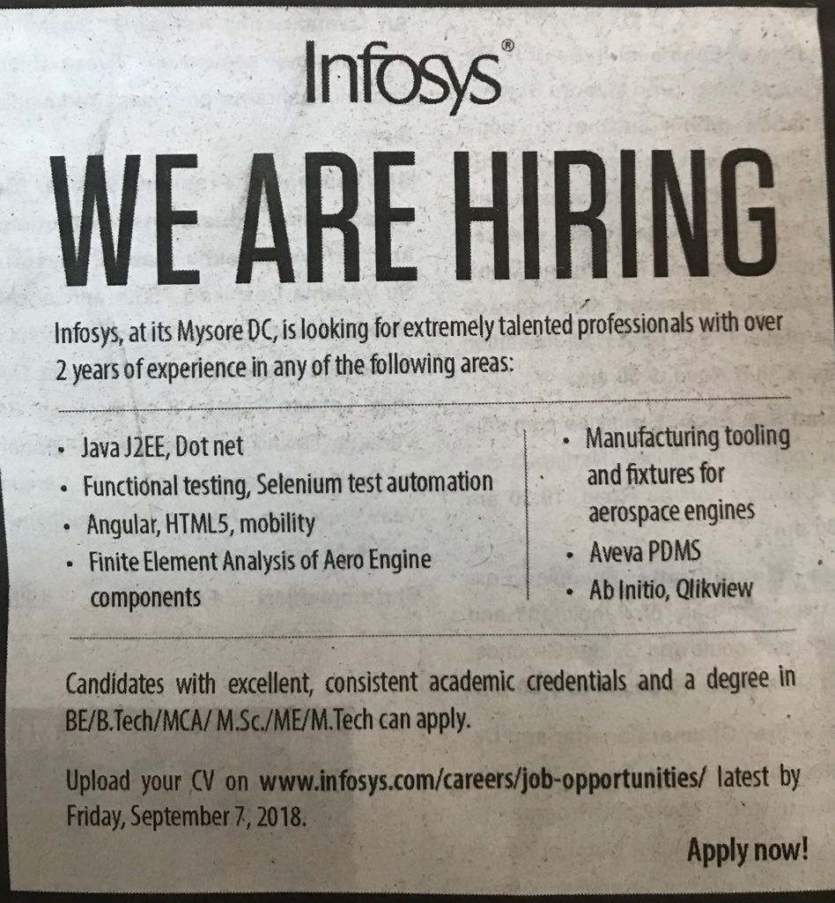
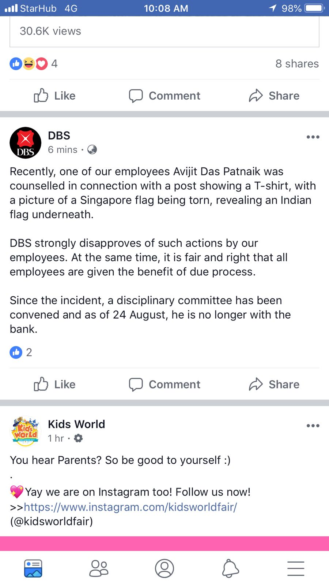
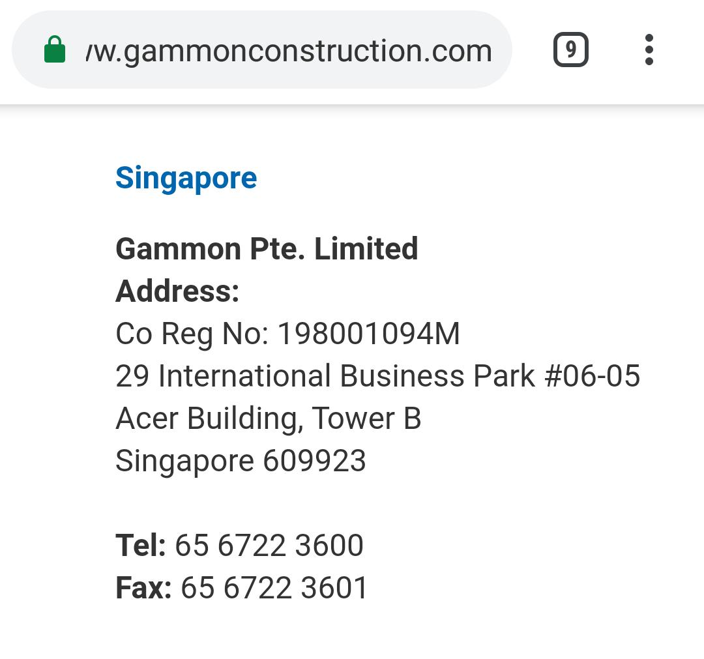

WhatsAppJobs
Welcome to landing pages of WhatsAppJobs.Here you can all the latest JOBS posted via WhatsApp.
| https://atos.net/en/2018/press-release_2018_10_09/atos-digital-leadership-strengthened-completion-acquisition-us-based-syntel?utm_source=social&utm_medium=facebook&utm_content=profile&utm_campaign=IN+-+PR+-+Atos+welcomes+Syntel |  | We are hiring. Job description: - Temenos T24 consultants. - Technical or Functional Share your updated profile to careers@skandatech.com / hr@skandatech.com. Please do refer your friends who can also take up this opportunity. Thanks, TAG Team - SKANDA | |||||||||
|
| |||||||||||
| Opportunity in singapore for Java professional with 5+ years of IBM ILog/ODM development (must have) experience. Requirement is in my team (banking client). It’s a contract position. Anyone interested can wats app me separately. Thanks! |  |
||||||||||
| Greetings! Arowana(www.arowanaconsulting.com) We have an excellent opportunity for the Position SalesForce Developer for the location Dubai. - Immediate opening. Candidates who can join at the earliest this month i.e. in October can only apply for the above mentioned post. Thanks & Regards, Nisha | Talent Acquisition nisha.kanojia@arowanaconsulting.com Bangalore | Dubai | Abu Dhabi | Jeddah | Muscat | New York |  |
||||||||||
|
|  | ||||||||||
|
|  | ||||||||||
| Urgently looking out for Software Tester for Dubai Location.Experience of UAT -telecom domain project mainly on BSS domain. Experience in Fixed & Internet Products etc. Send me your profile asap at nasim@gtfs-gulf.com |  | ||||||||||
| My relative is in Singapore and looking for job as Quality control Engineer. He got good experience as Quality control engineer. Any leads with Agencies will be helpful. Also if anyone in this group knows who is working as Quality control engineer, please do refer to him or give his number |  | ||||||||||
| 2. Senior Officer, System Development Job Responsibilities Your key roles & responsibilities include: Responsible to develop programs accurately in the established standard way with quality. Assist leaders and managers in the management in running of the System Development Department for the bank. Responsible for producing documents and programs of projects undertaken to be submitted to management and Head Office for approval. Regular reporting on status of development activities of project undertaken. Responsible for support and trouble-shooting in application systems of the bank. Responsible to act as a backup for the staffs in the team and take up & perform ad-hoc assignment assigned by the team and section head. Job Requirements What you should have: Degree in Information Technology. At least 4 years of experience in system development. System development experience in VB.Net(or Java, C#), Oracle on a Windows basis. In depth knowledge of .Net and Web architecture are necessary. Relevant certifications will be advantageous. Banking Domain knowledge is advantageous |  | ||||||||||
| Job Responsibilities Your key roles & responsibilities include: Responsible to develop programs accurately in the established standard way with quality. Assist leaders and managers in the management in running of the System Development Department for the bank. Responsible for producing documents and programs of projects undertaken to be submitted to management and Head Office for approval. Regular reporting on status of development activities of project undertaken. Responsible for support and trouble-shooting in application systems of the bank. Responsible to act as a backup for the staffs in the team and take up & perform ad-hoc assignment assigned by the team and section head. Job Requirements What you should have: Degree in Information Technology. At least 2 year of experience in system development. System development experience in VB.Net(or Java, C#), Oracle on a Windows basis. In depth knowledge of .Net and Web architecture are necessary. Relevant certifications will be advantageous. Banking Domain knowledge is advantageous |  |